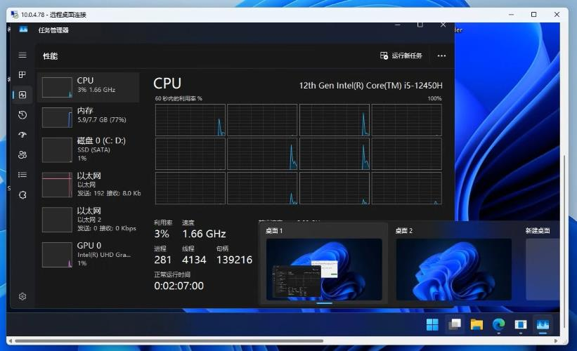
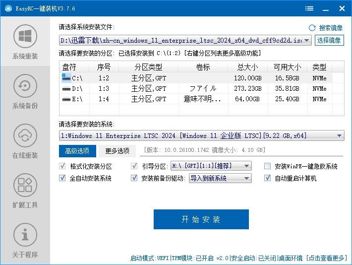
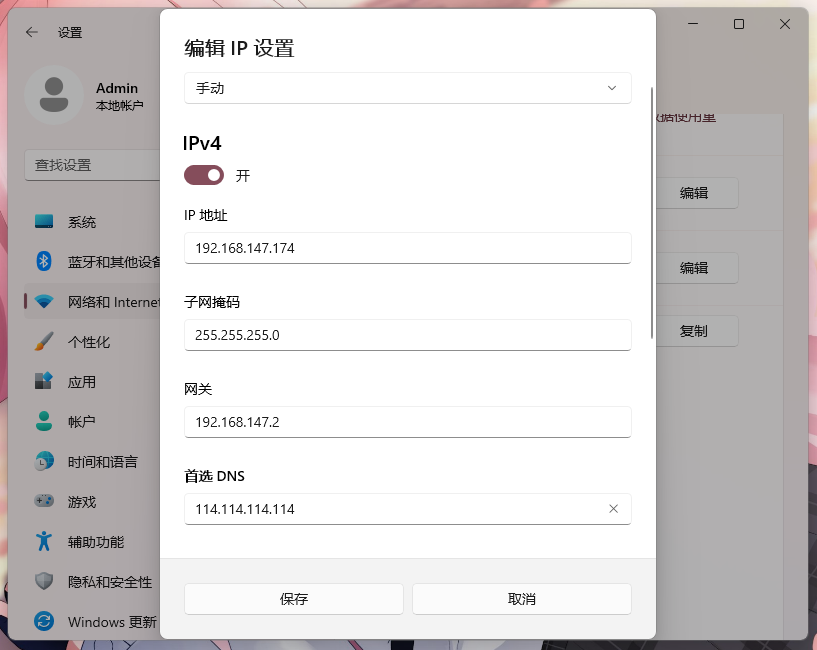
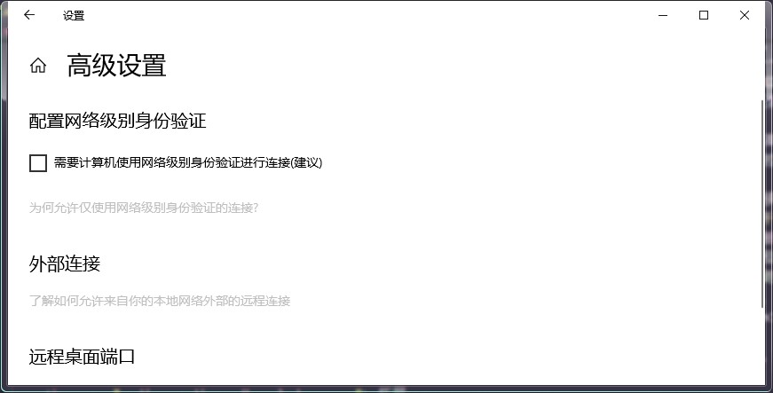

警告
警告
草，被你找到完整版了，补药视奸我啊
这篇文章写完后我发现貌似只有 Win11 LTSC 版本有这个功能，其他版本（比如专业/专业工作站版）登录上去会把 Administrator 顶掉，目前不知道怎么解决，组策略都翻烂了
此外，这篇文章发布后已经过多次修订，具体请见 GitHub 上 Commit History，因此多处表述混乱，衔接不当，也有很多情绪化表达以及脏字，敬请谅解。这也是我第一次尝试撰写此类文章，若大家喜欢我后续可能会继续更新此类内容。
（2026/1/1 更新）你说得对，一年过去了这篇文章还在改（
这篇文章真的只是想讲 RDP 的呀，我怎么写了这么多...
如果一篇文章要用几十 KB 来记的话那我也确实该精简一些内容了...
另外，我也不是很支持你在现实中模仿我们的行为，毕竟这也是学校公共财产，就当我在讲个故事吧。
相信对我比较了解的小伙伴都知道我和我最好的朋友 AbCd 考上了株洲市南方中学，但人家好歹是个重点高中，一体机的性能比一些普通民办高中差的远，机房我就更不想说了，2GB 内存我想不到除了能开机还能干什么（甚至还装了个 Win10 系统），对于我们这种开发者，当务之急是找一台好电脑。班上的希沃用的 8 代酷睿和 4GB 内存，虽然放在现在勉强能用，开个 PPT 也没有太大问题，但开个 VSCode 还是能吃满，再挂个 PS 电脑风扇叫的比 AbCd 被 * 还响，我就这样拿着这台 git 扫描要扫半天，Edge 开个 GitHub 就快不行了的破电脑硬生生写出了很多程序，但有一天，转机来了。
我在 404-2 教室里午托，那个教室里堆满了灰尘，一看就是没人用的废弃教室。但黑板里镶嵌的一块屏幕吸引了我的注意：那是一台崭新的希沃，虽然灰尘让它失去了光泽，边框比我们班上用的小的多，屏幕质感也很舒服。经确认，这是希沃 7 代机，而且全校仅此一台。每次中午午休，我都想打开这台电脑看看，但不幸的是，那一层楼是年级组办公室所在地，经常有人巡查。终于有一天，我实在按捺不住内心的好奇，将此事告诉了 AbCd。我们找了个时间，偷偷打开电脑，我彻底惊呆了——那台电脑的配置比我现在用的电脑还要好！12 代 i5，8GB 内存，最重要的是有 4K60 帧的屏幕！我们自己班上的只能开 1080P，而且系统动画未必能跑满 60 帧，云母都够显卡喝一杯了，按下 Win+Tab 任务视图动画更是一坨，但那台电脑在 4K 并全特效情况下仍然流畅。再一看，这台希沃的主体部分竟然是安卓 14！我自己手机都只是安卓 12，我之前认为我一个安卓佬不配用苹果，现在是不配玩希沃了。所以我真不知道南方怎么想的，这么好的东西不给我们教学使用，而是放在这里被人遗忘，连硬盘都是空的，几乎找不到使用痕迹。
从此，每次午托我都盯着那台电脑，快被馋死了，当然更多是难受，就好像伯乐看到千里马骈死于槽枥之间。总想将其据为己有。后来，我们班上另外一个人找到另一个废弃教室——207 教室，那台电脑和其他班一样也是 8 代，性能并无出众之处，唯一亮点是其他班都是 128G 硬盘，它有 256。我把那台电脑重装了并格式化全盘，余下来的空间用来找种子和下片。那台除了迅雷啥也不会干的电脑突然给了我灵感：反正我们都在局域网内，那台 12 代的电脑所处的位置又太危险，为什么不 RDP？
说干就干，我宣布，Salt 拯救计划 现在开始！至于为什么是 Salt，这个后面再讲。
计划的第一步，是在保证安全性的同时进行原理验证。我们先用 207 电脑做实验。我先用 ipconfig 查了一下，并记住了 207 电脑的 IP，然后在自己班上打开 mstsc，诶，为什么连不上？
原来是要在系统设置里把远程控制打开，但又出现一个新问题：用 mstsc 连接时弹出需要输入用户名和密码，用户名无非是 Administrator 嘛，密码我留了空，毕竟本来就没密码，但是却显示我没权限。
AbCd 想出了一个好主意：新建一个用户并设置好密码，然后给个管理员权限。他打开 mmc，新建用户时毫不犹豫将用户名设置为 “Salt”

这里我想提醒大家，虽然电脑的管理员叫 Administrator，但你给一个用户分配权限的时候（用户属性中“隶属于”选项卡）要使用 Administrators！微软会教你分清单复数。
这个时候，可能有些人已经看懂了。我之前在一些文章中提到过，我推是ソルト（拜托，一只香香软软可可爱爱的紫毛小猫娘谁不喜欢啊）
后来我带 AbCd 入坑 maimai 后ソルト就不知怎么也变成他的推了，反正你大概可以理解为这是我们最喜欢的角色，包括 AbCd 和我也整了一些周边，现在想来，把用户名设成这个也许也是我们的象征吧（带着你的_____吃大份去吧）
然后密码用的 Salt 一句经典语音的罗马音，具体是什么你自己猜，反正都是にゃ开头了肯定不是什么好东西。咳咳，扯远了，我成功用 Salt 这个账户连接到那台挂迅雷的电脑，当我看到 OOBE 结束，桌面展示在我眼前，我是如此激动，在那里发癫，就像原始人第一次见到电脑。并且你知道吗，Windows RDP 原生支持触屏，而且在内网里延迟真的很低，画质肉眼都看不出什么压缩，我宣布 mstsc 是微软搞出来的最好的软件！而且老师用 Administrator 账户上课，能正常进行教学，我们登录 Salt 和他完全没有干扰，老师那里也不会有任何显示。两个用户如同两个完全分割的世界，老师如往常一样进行上课，似乎什么都没有发生。
现在，我的眼睛里充满了希望，我已经瞄准了下一个目标，我的 U 盘也开始准备下载各种文件，现在，我们只需要一个机会。
11 月底，我们因期中考试重新分培优班，404-2 将成为培优班教室，也就是说，那匹“千里马”终于得以重见天日。如果有人要在这里上培优课，那势必会有大量人经过这里，那安全性反而提高了，没有人会发现混进去一个人。我找了个机会，偷偷潜入 404，仔细打量那台电脑。那台电脑原装的 Win10 22H2，虽然说完全满足开发需求，但这么好的配置，不装 Win11 岂不浪费？而且我也很想看看 Win11 近乎完美的触摸和高 DPI 适配在 4K60 帧上表现如何，因此，我有个大胆的想法：先重装系统！
为了方便，我使用 EasyRC 进行重装。EasyRC 不仅可以帮我们干掉烦人的 Windows Defender，自动导入驱动，还具有无人值守功能，不需要太多人工操作，而且基础配置在原系统上就能搞定，PE 都不用进，大大降低了风险（我可没接广，这玩意真的好用）在制定好完备的计划后，Just do it。
17:40，老师同学们都去食堂就餐，我和 AbCd 开始在原 Win10 上配置 RDP。404 旁边就是年级组办公室，风险极高，我对 Windows 用户账户管理不是非常熟悉，所以 AbCd 负责创建账户，我负责放风。
当 AbCd 深吸一口气，踏进教室，原本黑漆漆的教室突然亮起来，这把我们都吓了一跳，回头一看，是教室后面的监控，检测到人体就自动亮灯，我安慰好 AbCd，让他继续尽快操作，年级组这个时候应该不会看监控。此时 AbCd 目不转睛地盯着屏幕，手指快速地点击着。我也趴在门口，仔细观察左右两边的人，确保没有老师，就像在执行秘密任务一般。
终于，AbCd 花费不到两分钟便配置好账户，并将我的 U 盘留在一体机上，我们快速撤离。
我回到 AbCd 的班上，重新打开 mstsc 并输入那串熟悉的 IP 地址，登上“Salt”，输入密码，接着我将 U 盘里的镜像解压，将 install.wim 放在本地目录，然后让 EasyRC 自己装。现在只要等就行，它会帮我们搞定一切。
饭后，在重装完的电脑上再次配置好 RDP 用户，我们再次连接到 404。因为晚饭后的第一节自习就是培优课，因此开发环境什么的都不重要，重要的是把希沃白板，Office，QQ 等常用软件装好。我们用最快的速度下载好希沃白板的安装包并安装，并使用 Office Tool Plus 部署 Office，然后学校的网速还是太慢，离上课只有最后 26 分钟，而 Office 只下载到一半，时间正一分一秒流逝，在最后几分钟终于完成了下载。现在，我只希望它能尽快完成安装。
多亏了这台电脑的性能，安装进度条比我想象的快的多，为了安全，我们来到 404 教室，看到 Office 图标已经全部点亮，我们终于松了一口气，现在已经能正常使用了。
然而，一位老师进入教室，插上了 U 盘，打开 Word 文档，却因为未激活而无法看到内容。此时，我快要崩溃了，因为我忘了 Microsoft 365 和之前的版本不一样（AbCd 注：不用 2024 导致的），旧版 Office 没激活就会以只读打开文档，而 MS365 不激活不让你用。AbCd 决定冒险。他走进教室，打开 PowerShell，输入激活指令，这种过于超前的操作也让老师佩服。他在操作过程中还不忘和我搭讪：“诶，这电脑之前上课不还是好好的吗？怎么突然变成 11 了？”“不知道啊。”我回答道，就这样，我们终于骗过了老师，我们各自回到自己的班上，连上看似波澜不惊，内心早已汹涌澎湃难以遏制。
第二天，我们配置好 VSCode 和 Python，后面的事情自然不必多说，这台高性能电脑干啥都快。用之前班上的电脑跑 Nuitka 编译要整整 85 分钟，这台电脑十多分钟就搞得定（虽然还没测试）；之前电脑跑 Photoshop CS6 还卡的一批，现在我们可以毫无顾虑地安装 PS2023 并且即使编辑高分辨率图片也依然流畅。此外，我们还发现一种新的使用办法——周二的信奥培训，机房和教学楼的网是互通的，所以我们直接用 RDP 连接上那几台电脑。RDP 会自动适应当前操作系统的分辨率和 DPI，总之就是非常舒服。机房里都是一溜的 Win10，就我们两在享受流畅的 Win11。
那天晚上，AbCd 跟我说：“我好喜欢 Salt 啊，在各种意义上”。我当然知道他是什么意思，他整了一些奇怪的东西，具体我就不放图了，反正羡慕 AbCd 。
几天后，我又发现一个问题，就是那个 IP 突然连不上了，但是 Ping 它 Ping 的通，经过我和 AbCd 的排查，Win11 的 IP 貌似是动态的，这个好办，在高级设置中禁用自动 DHCP ，然后自己配置 IPv4，DNS，子网掩码之类，至于为什么 Ping 的通，那估计是局域网内其他设备。
另外一个问题是如果老师在用 Administrator 上课，下课后关机是可以直接断开我们的连接并断电，没有任何提示，这导致有时候程序没保存就连不上了，除了开 AutoSave，貌似没有什么办法防止这种情况出现。
拓展
这些内容也是我后来加的，防止大家踩坑。
在 Win11 上启用远程桌面相当简单，直接设置-系统-远程桌面，启用它就行，但在 Win10 里面就不一样了。
我们找到一台 Win10 1703 电脑，发现它连 Ping 都 Ping 不通，这个好办，干掉 Windows 防火墙。但问题是你启用远程桌面要在高级设置中禁用 NLA，不然证书问题你连不上去。
需要注意的是，这张图片在 Win10 2009 上截取，1703 之类较早版本高级选项没有 UWP 设置项，而是传统的控制面板选项卡，不过没关系，换汤不换药。
总之，我们是真的得吃了，我们成功殖民 5 台电脑，并且我还专门用 PhotoShop 做了一张壁纸，每搞定一台系统就给它换掉壁纸，代表这台电脑以及被“hack”了。按理来说，我们只需要尽情享受这意外的至高算力，故事也在这里画上圆满的句号，但今天发生了一件事，彻底激起了我的怒火。
周三中午，我早早吃完饭，像往常一样在自己班上登录 RDP，此时我还没有登上 404，而是先登录 207 拷文件。我还没操作多久，就听到广播里传来一阵厚重的声音——那是年级组某个老师的声音：“X 班，X 班，...，XX 班，不要再玩电脑了，马上来年级组办公室。”他是怎么知道有人玩电脑的呢？每个班上前后都装了监控，他们只要想巡查，随时看得到，问题是现在是下课时间，本来也不属于他们管辖的时间范围，而且天天看摄像头视奸我们有意思吗？此时我真他妈想去厕所抠两坨屎来糊摄像头上。老子 tm 只是写会代码，又没玩游戏看视频，你到底要寄吧干什么？这种事也不是第一次了，老子之前有一天在教室里学 AE CS6，然后惨遭制裁。那一刻，我深深明白，我们用技术换来的自由，在权力结构面前是如此的脆弱。年级组的命令如同圣旨，具有至高无上的权威，我只能关掉显示器下楼。
好在，他们没有罚我，但这也让我感到后怕。与此同时，那个开辟 207 教室的同学正躲在 207 教室里，没有遇到任何危险，那只能说我运气不好了，但 207 那个机子触摸真的是一坨大的，我可不希望拿那台机子开发。
后来，207 也出事了，如图
现在，我需要好好权衡一下。直接去 404 是绝对不可能的，在自己班上 RDP 已经被抓过一次了，也许只是运气问题，但下次被抓的后果我可不敢承担，目前来看 207 最安全，因为在我们挖掘 404 之前将 207 的电脑作为备用机，已经有了一小部分开发环境（VSCode 一定要装 System！血的教训！），甚至登录了自己的一些账号，虽然最近也有人在那里上培优，安全性也减弱了。目前来看最安全的方法是去机房，机房可以直接连上 404，而且有键鼠也舒服，老师也不管，但问题也很明显——去机房的时间少之又少，不能在我们的考虑范围内。而且就算我们能找到一个完全安全的环境，也干不了什么大事，一是时间太分散，对于编程这种极需专注的活动是非常不利的，有可能写一半上课铃响，下课后再继续写，灵感就没了。二是学校学习生活早就把我们折腾的身心俱疲，也没有什么精力去写东西了。但无论怎么说，这次行动的结果虽然没达到预期，但也让一台被遗忘的电脑重新为人服务，也进行了一次次惊心动魄的挑战权威，更是枯燥的校园生活中有意思的发光时刻。
这束光也并没有只照在我们身上，像所有发现了秘密基地的孩子一样，我们忍不住将这篇文章小心地分享给了少数信得过的、同样被卡顿电脑折磨的朋友。没有具体的坐标，只有方法。
如今，已经有多名同学找到不常用（例如录播教室）内的高性能电脑，他们或用这些电脑打游戏，或编程，或上网。他们使用同样的方法，在未被封死的 3389 端口进行着一次次数字游击战。
（补）你以为故事这么快就结束了吗？
这篇文章写完之后第二天，我和 AbCd 再次来到机房连接上 404（当然，我的 Salt 被 AbCd 霸占了，我只能用 207 了，207 电脑其实也比较卡，就应该让他给我再开一个用户）然后，就是洛谷嗯刷题，因为不太想用网上邻居就拿 LocalSend 传文件，还是比较和谐的，然后我才知道RDP 能直接共享剪贴板传文件，操，老子用了这么久 LocalSend 算什么，天天套接字出问题找不到 API，这不比 LocalSend 稳定？
另外，在文章的末尾，我特别想表达对我们信息老师的感谢，她们虽然没有参与这个计划，但她们允许我们在课上远程连接，写自己的程序，并给予我们鼓励和支持，为整个计划的最后一端提供有力的支撑。
再跟大家讲点有意思的，在任务管理器里可以看到其他用户（比如 Administrator）并将他们断开连接，注销，或者发送消息，AbCd 就给正在上课的老师发送了一条消息，证明我们曾经“入侵”过这里。
他发的是什么呢？
好难猜啊。
附：xxt 向 207 发送的消息
--------
来自 黑调的低客 的消息
The computer was hacked! :P
This message is sent from BlackDick